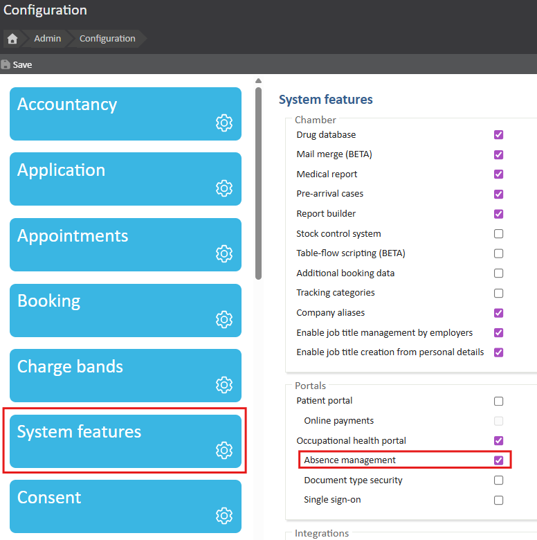
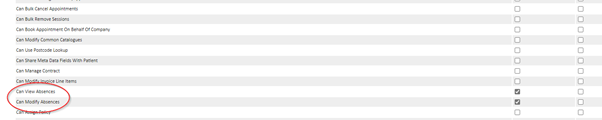
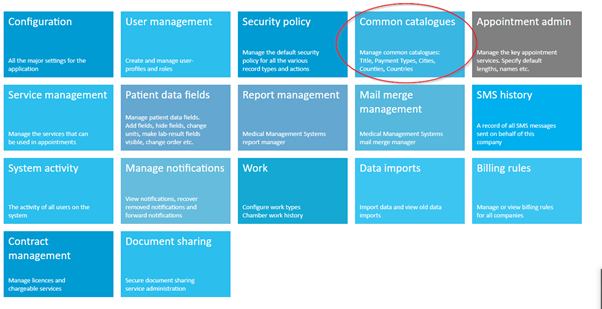
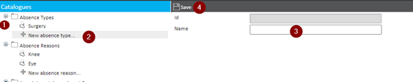
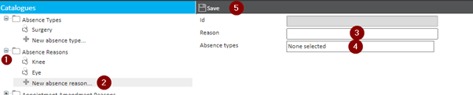
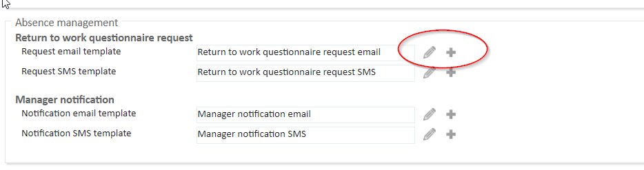

Absence Management is an additional feature of our Occupational Health system. This feature enables OH providers to act as a 3rd party in managing an employee absences.
Instead of an employee contacting their employer to log an absence, they contact a 3rd party Absence Management Provider to log the absence. This enables OH providers to offer an additional service to their clients who have large employee bases, where it may not be feasible for a manager to administer absences. It also may aid in removing a layer of bias that could exist between a manager and an employee.
This article outlines how you can configure the Absence Management feature in Meddbase
The first step is to enable the Absence Management feature in Admin > Configuration > System feature.

After the feature has been enabled, two new permissions will become available under the company certificate in Admin > Security Policy: 'Can View Absences' and 'Can Modify Absences'.
Make sure to grant permissions to the user/role as you see fit before you start using the Absence Management module.

The next step in Absence Management configuration is to add ‘Absence Types’ and ‘Absence Reasons’ in Common catalogues.
To do this from the Meddbase Start Page:

In Common catalogues:

In Common catalogues:

All the reasons will have to be linked to an Absence Type. So, you can have one Absence type with several absence reasons. For example, you can have an Absence type Surgery and several Absence reason values such as knee, eye, leg, etc.
The defaults 'Return to work' and 'Manager Notification' email and SMS templates have already been added to your chamber. You can also edit the default templates or create a new template as you see fit.
To do this from the Meddbase Start Page:

Absence Management configuration is now complete. Absences can now be managed in Meddbase (Patient Record > Absence Management) or in the OH Portal (Employee Management > Absence Management).